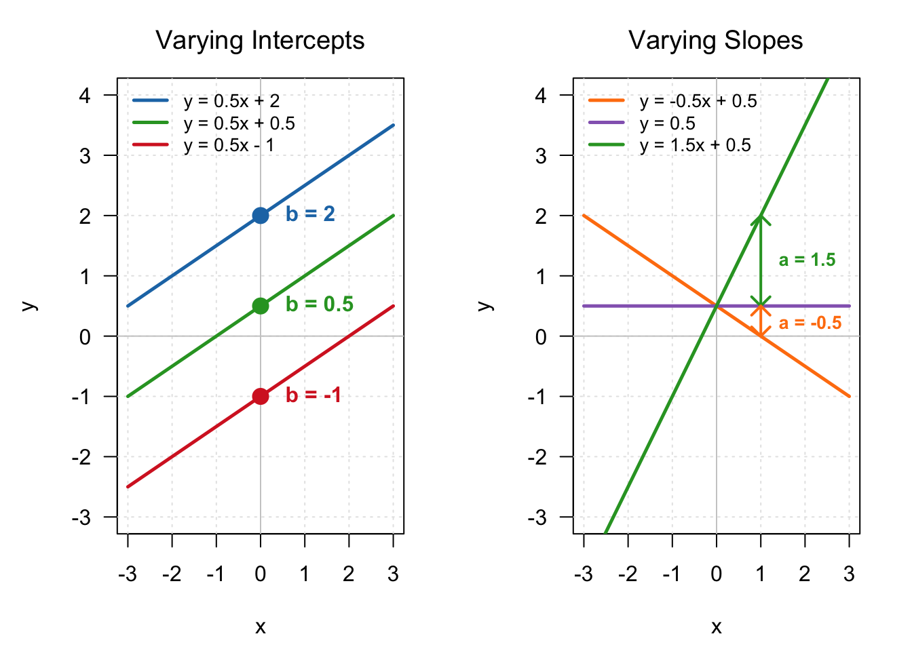
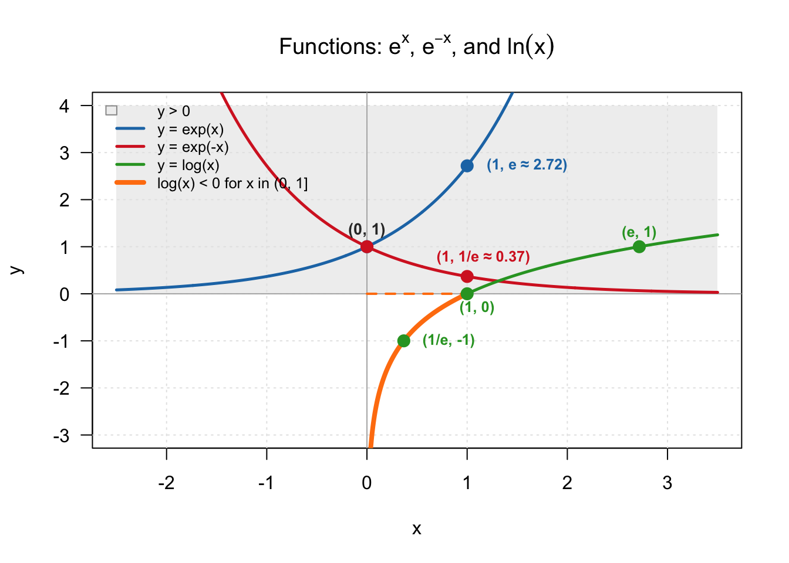
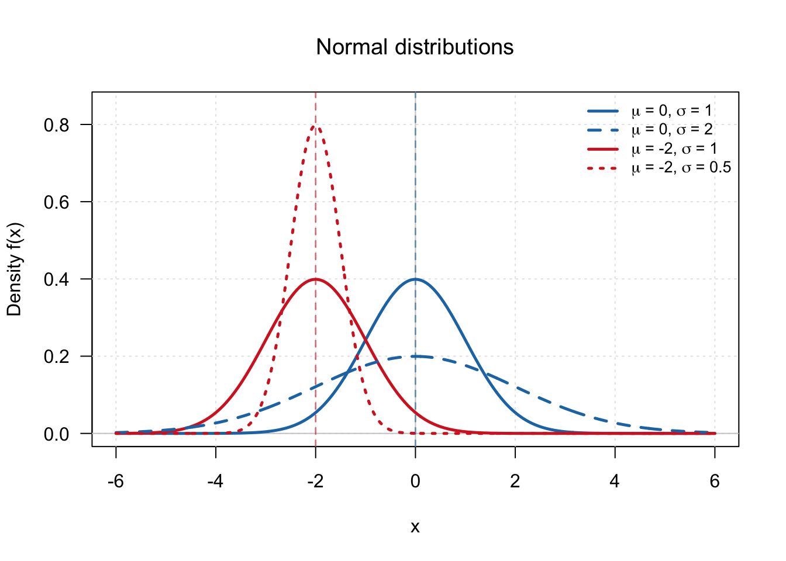
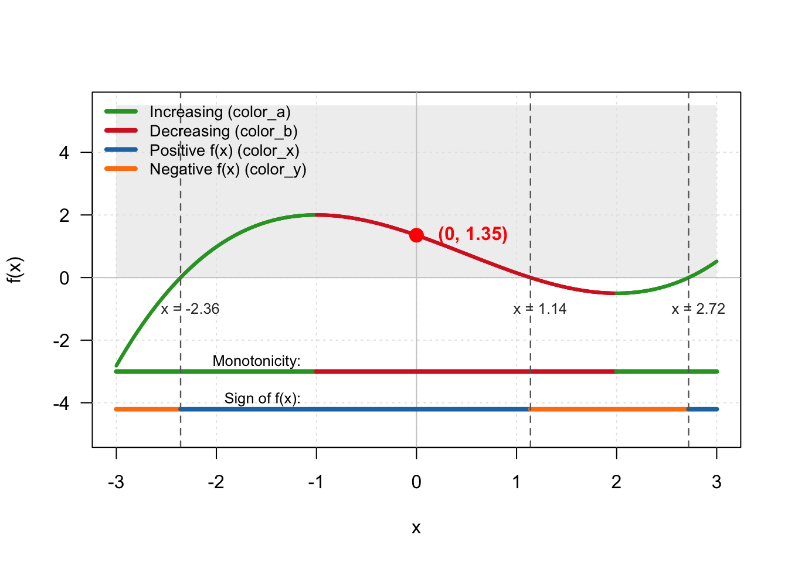

9 Function and graphics
Ikotozafy ihany no Alexis!
In standard high-school mathematics curricula—such as the French Baccalauréat exam—the highest point allocation belongs to the comprehensive calculus problem. A function is introduced at the start, followed by a sequence of procedural steps: finding the domain of definition (domaine de définition), computing limits (limites), evaluating derivatives (calcul de dérivée), constructing sign and variation tables (tableau de variations), and ultimately sketching the representative curve (construire la courbe représentative).
Looking at the big picture, the overarching goal of the exercise is simply to plot a curve for a given function. Yet, in the modern era, this is hardly a problem: there are applications that transform a handwritten function into its representative curve.
While there is undeniably an educational purpose in learning to sketch a curve by hand, it often comes at the expense of developing a far more critical skill: reading and interpreting graphs. It is surprisingly common, even at the Master’s and Ph.D. levels, to encounter students who struggle to interpret scientific figures.
A major breakthrough in mathematics occurred when René Descartes realized that geometric shapes—such as the curve of an arch or bridge—could be defined precisely by mathematical equations. This birthed analytic geometry, establishing that algebra and geometry are two perspectives of the exact same underlying reality.
Fundamentally, drawing a curve requires nothing more than evaluating \(f(x)\) across many values of \(x\); once enough points are plotted, the continuous curve emerges. The true value of mathematical analysis lies not in the mechanical rendering of points, but in understanding what the resulting geometric shape reveals about the underlying system.
Formal
In analytical geometry and applied mathematics, the graphical representation (or curve) of a real-valued function \(f: D \subseteq \mathbb{R} \to \mathbb{R}\) is the geometric rendering of its formal mathematical graph \(G \subset \mathbb{R}^2\) within a designated coordinate reference system.
Formally, it maps abstract ordered pairs \((x, f(x))\) to a two-dimensional space.
Let \(f: D \subseteq \mathbb{R} \to \mathbb{R}\) be a real-valued function defined on domain \(D\). Its graphical representation is a two-dimensional geometric structure defined by the tuple \((\mathcal{A}_x, \mathcal{A}_y, \theta, s_x, s_y, C_f)\):
The Coordinate Axes (Reference Frame):
- Abscissa (\(\mathcal{A}_x\)): The horizontal directed axis representing the input domain \(D\).
- Ordinate (\(\mathcal{A}_y\)): The vertical directed axis representing the output codomain \(\mathbb{R}\).
- Origin (\(O\)): The unique point of intersection \((0,0)\) between the two axes.
The Intersection Angle (\(\theta\)):
- The angle of inclination formed at the intersection of \(\mathcal{A}_x\) and \(\mathcal{A}_y\).
- Cartesian (Orthogonal) Frame: \(\theta = \frac{\pi}{2} \text{ rad} = 90^\circ\). This standard convention ensures horizontal and vertical projections are perpendicular, preserving standard Euclidean metrics.
- Oblique Frame: \(\theta \neq 90^\circ\), used in non-orthogonal vector projections or specialized linear transformations.
The Metric Scales (\(s_x, s_y\)):
- The mapping functions \(s_x: \mathbb{R} \to \mathbb{R}_{\ge 0}\) and \(s_y: \mathbb{R} \to \mathbb{R}_{\ge 0}\) that map numerical values to physical lengths on the page or screen.
- Isosceles (Equiscale): \(s_x = s_y\). A unit length along \(x\) equals a unit length along \(y\), preserving true geometric ratios (e.g., perpendicular lines remain visually perpendicular).
- Anisotropic (Non-equiscale): \(s_x \neq s_y\). Essential when inputs and outputs represent distinct physical quantities (e.g., time in years vs. \(\text{CO}_2\) concentration in ppm) or differ by orders of magnitude.
Point Construction via Projections: For any domain value \(x_0 \in D\), the corresponding point \(P(x_0, f(x_0))\) on the graph is defined as the unique geometric intersection of two projection lines:
- The vertical projection line \(L_v = \{ (x, y) \in \mathbb{R}^2 \mid x = x_0 \}\), parallel to the \(y\)-axis.
- The horizontal projection line \(L_h = \{ (x, y) \in \mathbb{R}^2 \mid y = f(x_0) \}\), parallel to the \(x\)-axis.
The point \(P\) is formally established by: \[P(x_0, f(x_0)) = L_v \cap L_h = \{ (x, y) \in \mathbb{R}^2 \mid x = x_0 \text{ and } y = f(x_0) \}\]
The Representative Curve (\(C_f\)): The continuous curve \(C_f\) representing the function \(f\) is the set of all such intersection
Examples
- Linear function: \(y = a \times x + b\). The intercept represents the value of \(y\) at \(x = 0\), which is \(b\). This is where the curve intersects the y-axis in the left panel. The slope is represented by the length of the vertical segments in the right panel, indicating how many units \(y\) increases as \(x\) increases by one unit.
- Exponential and logarithmic functions. Notice that \(\exp(\cdot)\) is always positive (represented in the gray area). The logarithm is negative when \(x \in (0,1)\). Notice that any point, such as \((0,1)\), is the intersection of a vertical line at \(x = 0\) and a horizontal line at \(y = 1\).

- Gaussian or normal distribution: adjusting the two parameters of the Gaussian distribution by shifting the mean (\(\mu\)) or changing the distribution width (\(\sigma\)).

Tips and warnings
In calculus, one typically begins with a known mathematical formula \(f(x)\) and analyzes its geometric properties to sketch its curve. In modern data science and applied modeling, this workflow is often reversed: we start with the geometry—an empirical cloud of data points gathered from observations—and attempt to discover a mathematical function that accurately describes that shape.
A summary of the correspondence between a few key analytical properties of a function and their geometric features on a graph:

From the graphical representation of a function \(f(x)\), key analytical properties can be visually interpreted directly:
Roots (\(f(x) = 0\)): The solutions to the equation \(f(x) = 0\) (called the roots or \(x\)-intercepts) correspond to the \(x\)-values where the curve intersects the horizontal axis. In the figure above, the roots are \(x \approx -2.36\), \(x \approx 1.14\), and \(x \approx 2.72\).
\(y\)-Intercept (\(f(0)\)): The point where the curve crosses the vertical axis is the \(y\)-intercept, which is simply the function evaluated at zero, \(f(0)\). In this graph, the \(y\)-intercept is \(1.35\).
Sign Analysis (\(f(x) > 0\) vs. \(f(x) < 0\)): The inequality \(f(x) > 0\) corresponds to the portions of the curve lying within the shaded upper region (\(y > 0\)). The input values satisfying this condition belong to the intervals \(x \in [-2.36, 1.14]\) and \(x \in (2.72, \infty)\), represented by the orange horizontal segments.
Conversely, the negative region (\(f(x) < 0\)) forms the complementary set, represented by the blue horizontal segments. Notice that the boundary points of these intervals are precisely the roots identified above—intuitively, to transition between the upper and lower half-planes, a continuous function must first cross the horizontal axis.
Monotonicity (Increasing vs. Decreasing Regions): A function is increasing on intervals where the curve moves upward from left to right (highlighted in green). The input values satisfying this growth define the green segments along the horizontal axis. Conversely, a function is decreasing on intervals where the curve falls from left to right (highlighted in red).